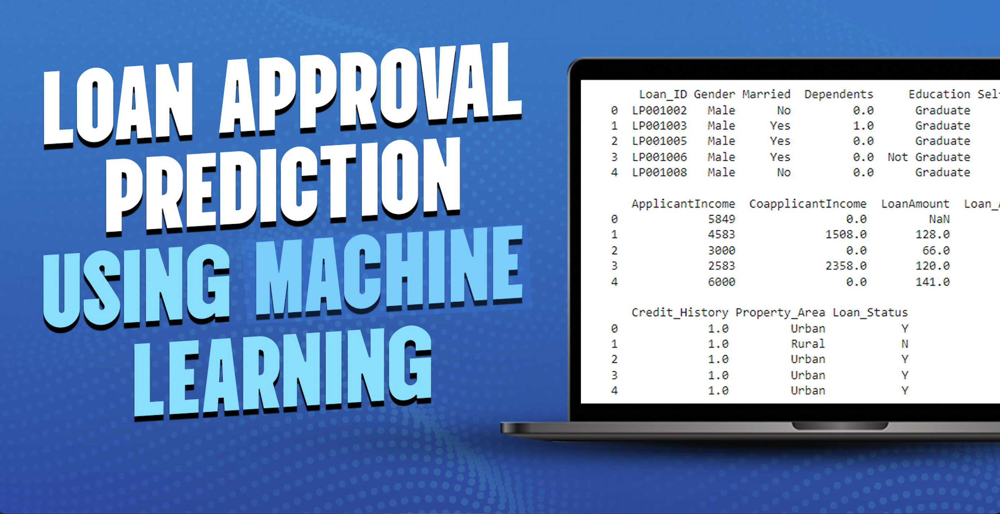
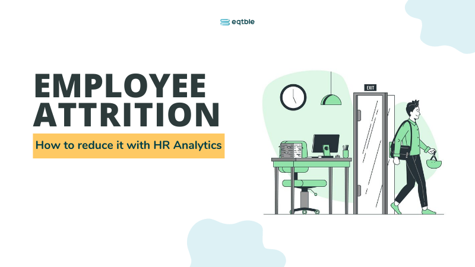

This project showcases my ability to design and implement data-driven investment strategies by combining financial theory with advanced analytics. I built a complete trading logic pipeline—from engineering entry and exit signals to optimizing decisions using machine learning—while ensuring the strategy remained interpretable and grounded in behavioral insights. The work involved time-series analysis, reinforcement learning, clustering, and data visualization, highlighting my Python understanding, financial modeling, and turning complex data into actionable investment insights.egy leveraging numerical analysis by combining 3 technical tools

A predictive loan approval model using a machine learning model based on applicant features such as income, credit history, and employment status. It applies data preprocessing techniques, exploratory data analysis, and classification algorithms to build an accurate and interpretable prediction system. The final model assists financial institutions in making faster, data-driven lending decisions while reducing risk.

Uncover the factors that lead to employee attrition and explore important questions such as ‘show me a breakdown of distance from home by job role and attrition’ or ‘compare average monthly income by education and attrition’. This is a fictional data set created by IBM data scientists.

An interactive Robo-Advisor that provides investment recommendations based on user risk profile and ESG preference. It uses Python for portfolio analysis, performance simulation, and optimization via the Efficient Frontier. The tool ensures diversification and offers a clear, user-friendly interface.
The SQL Murder Mystery is designed to be both a self-directed lesson to learn SQL concepts and commands and a fun game for experienced SQL users to solve an intriguing crime.

This playful project is a book recommendation and chatbot app using semantic search and language generation. It retrieves relevant books with FAISS and sentence embeddings, and displays them via a Gradio interface. A chatbot also generates personalized book summaries using structured metadata and a language model.